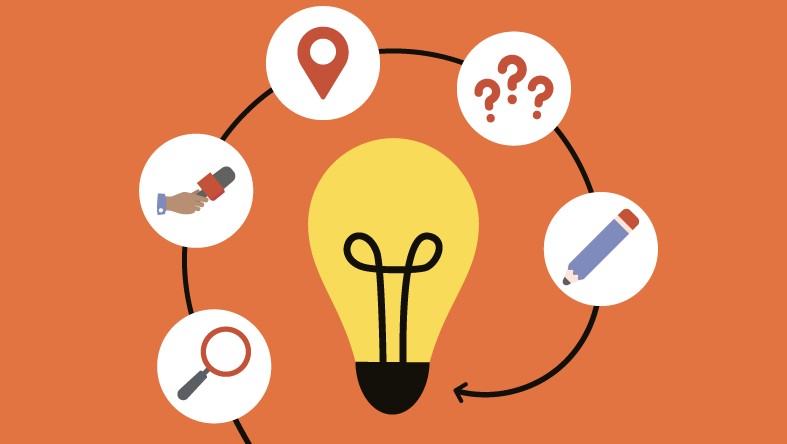
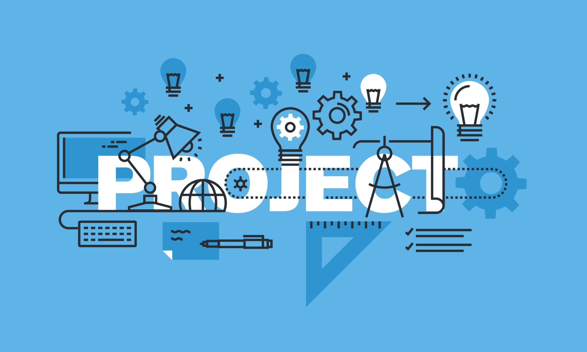

Projectweek
Voor de aanvang van het researchproject in het tweede academiejaar van de opleiding werd er een projectweek georganiseerd. Deze projectweek leert de student een heleboel activiteiten om zichzelf beter te leren kennen. Aan de hand van workshops worden er nieuwe skills aangeleerd zoals verschillende soorten schrijfstijlen, werken binnen een team en persoonlijke ontwikkeling.
De eerste dag werd er samen met een coach gekeken naar het Thalento-rapport en de kernkwadranten van je projectteam, dat bestond uit Tim Lorist, Goran Deckers, Arthur Lenaers en mezelf. Hier bespraken we ieders Thalento-rapport en discussieerden we over onze kerkwadranten.
De eerste taak was jezelf voorstellen met een object waar je belang aan hecht. Dit zorgde ervoor dat de teamleden elkaar al wat beter leerden kennen.
De coach en de andere teamleden gaven steeds feedback op wat er gezegd werd. Hierdoor ontdekten we al heel wat gedragskenmerken van elkaar. Ook het Thalento-rapport geeft heel wat informatie over hoe we handelen in bepaalde situaties. Zo kwamen we erachter dat ons team vooral uitvoerend is. We hebben nood aan structuur en een methode om een activiteit met succes uit te voeren.
Tijdens de tweede dag van de projectweek kregen we vooral informatie over hoe je moet reflecteren en over academisch schrijven. Deze kennis hadden we nodig voor het succesvol afwerken van de portfolio die op het einde van de projectweek moest opgeleverd worden.
Op de derde dag werd er in de voormiddag een online seminarie gegeven over de belangen van netwerken. Er werd verteld hoe je je netwerk kan uitbreiden en waarom dit zo belangrijk is. Ook werden er heel wat handige tips meegegeven voor een sollicitatie. Er werd uitgelegd welke soft skills belangrijk zijn bij een sollicitatie en er werden enkele kanalen uitgelegd waarmee je opzoek kan gaan naar een job.
De tips die we op de derde dag kregen konden we goed benutten op de vierde dag van de projectweek. Op deze dag woonde ik het online PXL-Jobevent bij. Je kon contact leggen met verschillende bedrijven en heel wat workshops bijwonen.
Een van de taken was het schrijven van een Linked-In samenvatting. Het doel hiervan is dat je een dynamisch online visitekaartje bezit. Zo kunnen bedrijven je vinden en contacteren via dit platform.
Een andere taak was het bijwonen van enkele workshops en contact opnemen met bedrijven die mij interessant leken. Op deze manier werd er verwacht mijn kennis te verrijken en mijn eigen netwerk uit te breiden. Zo heb ik de contactgegevens van enkele bedrijven verzameld en kon ik in de toekomst, wanneer ik bijvoorbeeld op zoek moest naar een stageplaats, deze bedrijven mogelijks contacteren.
Ook woonde ik twee workshops bij. Een eerste workshop legde het gebruik uit van PXL-Career Center. Dit is het online platform waarmee we bedrijven konden contacteren. De andere workshop vertelde over wat voor loon en extralegale voordelen ik kan verwachten wanneer ik op zoek ga naar een job.
Een van de interessantste gesprekken die ik had was met Selina De Witte van het bedrijf Exellys. Zij vertelde me hoe hun bedrijf kan helpen bij het ontdekken van mijn talenten en het achterhalen van mijn interesses in mijn zoektocht naar de juiste job of stageplaats.
Een andere activiteit was leren wat onderzoekend handelen betekent. We leerden wat een praktijkgericht onderzoek is en wat de richtlijnen zijn voor het onderzoek dat wij tijdens het researchproject moesten uitvoeren.
Voor de start van de projectweek wist ik niet goed waaraan ik me kon verwachten. Dit werd de eerste dag al snel duidelijk. Er werd overlopen hoe de indeling van de week eruit zag en wat er allemaal van ons verwacht werd. Het was de bedoeling dat we verschillende seminaries bijwoonden waarin we een heleboel informatie kregen over onze persoonlijke ontwikkeling, verschillende soorten schrijfstijlen, de jobbeurs die we moesten bijwonen en het researchproject.
Bij de start van de projectweek had ik het gevoel dat er van alles ging mislopen omdat ik veel opdrachten niet meteen begreep. Met wat geduld en het opzoeken van verdere informatie kon ik aan de start.

